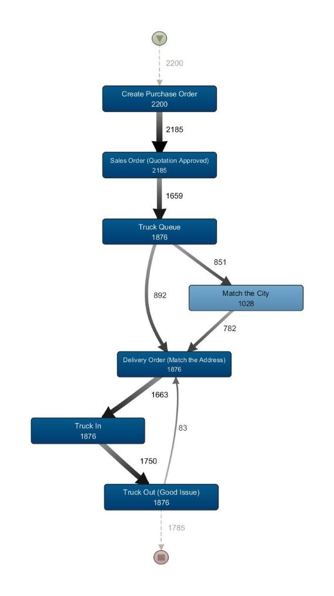
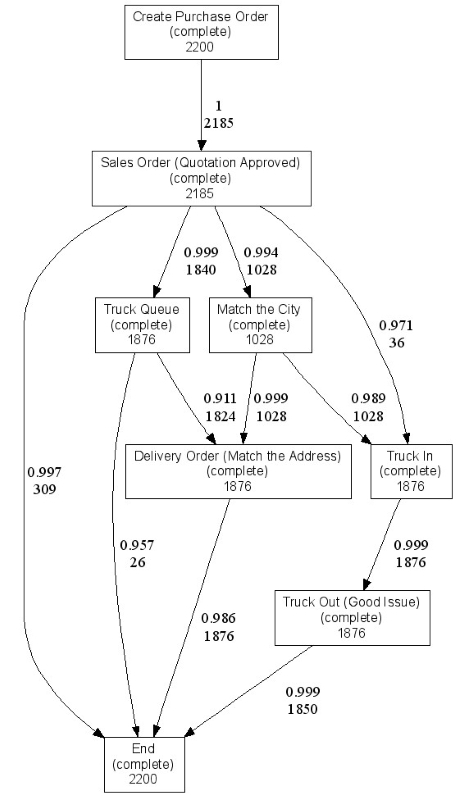
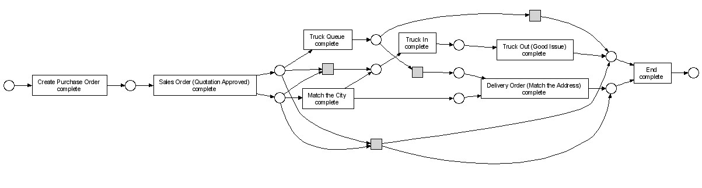

Modelling and Analyze the Performance of Plant/Warehouse in PT. XYZ Indonesia Sales and Distribution Business Process Using Process Mining Technique
This is a final project to obtain the Bachelor of Information Systems Degree, Institut Teknologi Sepuluh Nopember, 2015.
Nowadays, Enterprise Resource Planning (ERP) systems is implemented by major companies in Indonesia to improve the efficiency of their business processes. One of the ERP application that is widely used by companies in Indonesia is SAP. PT XYZ Indonesia has implemented SAP applications since January 2010. One of the core processes in PT XYZ Indonesia is the sales and distribution business processes. Sales and distribution process will determine the level of satisfaction of the timeliness of the delivery distribution. Timeliness of delivery of goods is influenced by the performance of two components in the process, namely the performance of plant/warehouse and forwarder.
However, in the process of the implementation of distribution of such products, there are discrepancy between the original plan and the realization in the field. Therefore, PT XYZ Indonesia need to model the business processes of the sales and distribution to evaluate the actual state of the business processes. Therefore, in this thesis, we will do the modeling and analysis of the performance of plant/ warehouse on sales and distribution business processes of PT. XYZ Indonesia using process mining techniques particularly Heuristic Miner algorithms.
The methodology used begins with the understanding of the business processes, the study of literature, data extraction and structuring the event log, modeling the process, evaluation of the results of the model, and then analyze the model. The tools that are used to model the sales and distribution business processes are Disco and ProM.

Figure 1. Sales and Distribution Business Processes Modeling output

Figure 2. Heuristic Net of Sales and Distribution Business Processes

Figure 3. Petri Net of Sales and Distribution Business Processes
After modeling and analyzing the result, it is known that there are sequences of process that violates the business process standards. From the analysis of the performance of plant/warehouse, it was found that the plant/warehouse with the fastest performance to handle any case in shipment is UP Tuban. From the analysis of the waiting time for each plant/warehouse, it is found that the waiting time bottleneck is occurred in the Truck Truck In Out (Good Issue) process, as the process of product packing is uncontrolled. The analysis results showed that the performance level of the cement packing process in PT XYZ Indonesia based on the standard time of completion of packing is 54%. The results of the pattern analysis of sales and distribution settlement business process showed that there are 89% of cases the sales order which is completed on time.